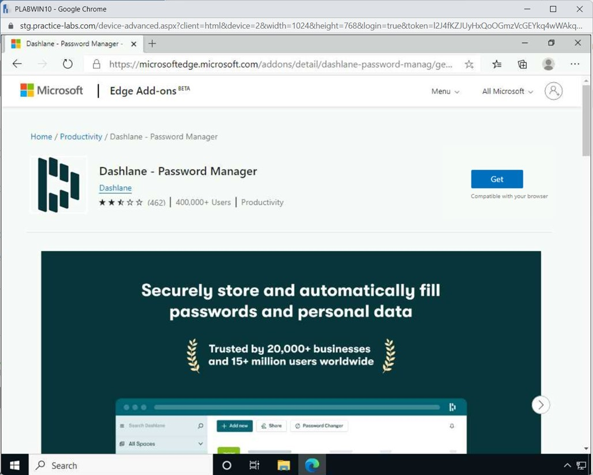
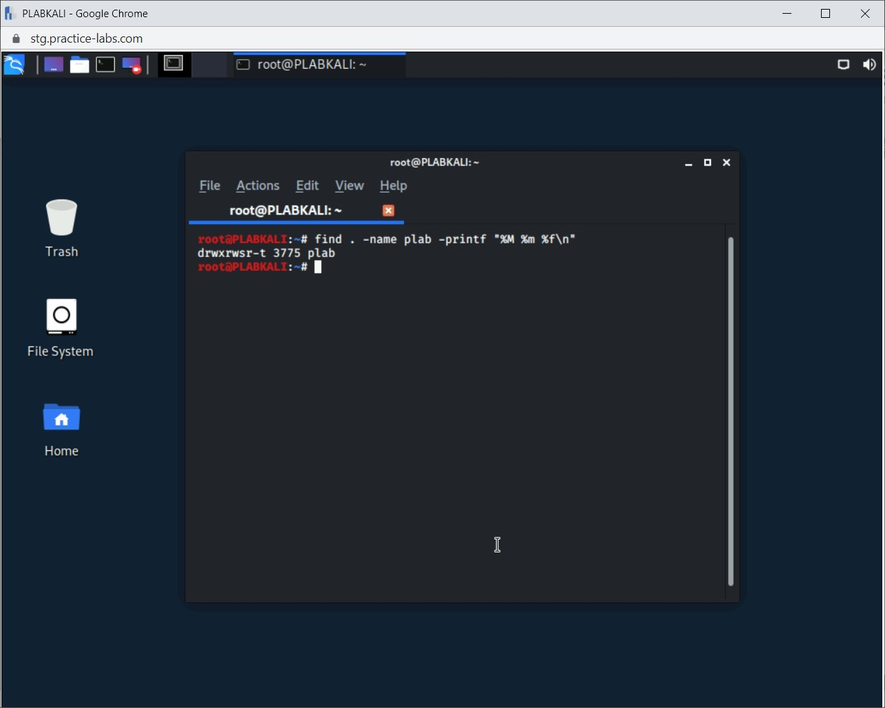

Introduction
9beca326-b493-4b0e-b3dc-d7dfb77df3c9
Welcome to the Authentication & Authorization Solutions Practice Lab. In this module, you will be provided with the instructions and devices needed to develop your hands-on skills.
dc640c20-9434-45ea-b7c2-6d4d6a196bfc
Learning Outcomes
In this module, you will complete the following exercises:
- Exercise 1 - Authentication Management
- Exercise 2 - Authentication
- Exercise 3 - Access Control Schemes
- Exercise 4 - Manage File Permissions and Ownership on a Linux System
After completing this module, you should be able to:
- Use a Password Vault
- Verify the TPM Chip
- Manage Access Permissions
- Change Permissions With Numbers
- Use Commands to Check Permissions (chmod, chown, chgrp)
- Set Access Modes
- Work with Immutable files
After completing this module, you should have further knowledge of:
- Password Keys
- Hardware Security Module (HSM)
- Trusted Platform Module (TPM)
- TPM vs. HSM
- Knowledge-based Authentication (KBA)
- Extensible Authentication Protocol (EAP)
- Challenge Handshake Authentication Protocol (CHAP)
- Password Authentication Protocol (PAP)
- 802.1X
- Remote Authentication Dial-In User Service (RADIUS)
- Single Sign-On (SSO)
- Security Assertions Markup Language (SAML)
- Terminal Access Controller Access Control System Plus (TACACS+)
- OAuth
- OpenID
- Kerberos
- Attribute-based Access Control (ABAC)
- Role-based Access Control (RBAC)
- Rule-based Access Control (RBAC)
- Mandatory Access Control (MAC)
- Discretionary Access Control (DAC)
- Conditional Access
- Privilege Access Management (PAM)
Exam Objectives
The following exam objectives are covered in this lab:
3.8 Given a scenario, implement authentication and authorization solutions.
- Authentication Management
- Authentication
- Access Control Schemes
Note: Our main
focus is to cover the practical, hands-on aspects of the exam
objectives. We recommend referring to course material or a search engine
to research theoretical topics in more detail.
Lab Duration
It will take approximately 1 hour to complete this lab.
c6fa62a3-1a00-4052-8104-258e8cbaa187
Help and Support
For more information on using Practice Labs, please see our Help and Support page. You can also raise a technical support ticket from this page.
Click Next to view the Lab topology used in this module.
d2c53300-f951-45a9-9aa4-3d4ecae69e11
Lab Topology
During your session, you will have access to the following lab configuration.

Depending on the exercises, you may or may not use all
of the devices, but they are shown here in the layout to get an overall
understanding of the topology of the lab.
- PLABDC01 - (Windows Server 2019 - Domain Controller)
- PLABDM01 - (Windows Server 2019 - Domain Member)
- PLABWIN10 - (Windows 10 - Domain Member Workstation)
- PLABKALI - (Kali Linux 2019.4 - Standalone Server)
Click Next to proceed to the first exercise.
<
Home |
README >
CompTIA Security+ Practice Labs
Exercise 1 - Authentication Management
Before a user is granted access to the local network's
resources or on a web application on the Internet, it is necessary to
authenticate the user. Authentication can be performed using a simple
username and password, or it could also be combined with other
authentication methods, such as a smart card or security key. The
authentication method is left to the organization that is running the
web application and, therefore, the organization needs to use the
appropriate authentication methods.
In this exercise, you will learn about authentication management.
Learning Outcomes
After completing this exercise, you should be able to:
- Use a Password Vault
- Verify the TPM Chip
After completing this exercise, you should have further knowledge of:
- Password Keys
- Hardware Security Module (HSM)
- Trusted Platform Module (TPM)
- TPM vs. HSM
- Knowledge-based Authentication (KBA)
Your Devices
You will be using the following devices in this lab. Please power these on now.
- PLABDC01 - (Windows Server 2019 - Domain Controller)
- PLABWIN10 - (Windows 10 - Domain Member Workstation)

Password Keys
A user is typically authenticated in most scenarios
using their login credentials, which consists of a username and
password. As long as you are on a network, this is considered to be
secure. However, simply using usernames and passwords are no longer
considered secure when you are on the Internet. Another authentication
factor should be looped in, which means that you need to have another
security method and a username and password. This is two-factor
authentication, which, sometimes, is also known as multi-factor
authentication.
Another method, which is considered highly secure, is
using password keys, also known as security keys. These keys are
designed to secure login credentials. When you attempt to log on to a
website, such as gmail.com, you are prompted to insert the password or
the security key into a USB-A or USB-C slot. Most of these keys also
work with various mobile devices, such as Android, using Bluetooth and
Lighting for iPhone.
Some of the key examples are:
Task 1 - Use a Password Vault
Password vaults are tools or utilities that can store
various types of passwords. A user can have several credentials for web
applications, network services, and logins. A password vault can store
these credential details. Dashlane is a well-known password manager /
vault. It allows you to store your passwords and use them with a single
click on web applications and websites. There are browser extensions
that help you fulfill your login information on various websites to save
the user credentials.
In this task, you will install and learn to use the Dashlane web add-in as a password vault.
Step 1
Ensure that the required devices are powered on.
Connect to PLABWIN10 and open Microsoft Edge from the Taskbar.
 Figure 1.1 Screenshot of PLABWIN10: Displaying opening Microsoft Edge from the Taskbar.
Figure 1.1 Screenshot of PLABWIN10: Displaying opening Microsoft Edge from the Taskbar.
Step 2
In Microsoft Edge, browse to the following URL:
https://www.dashlane.com
Figure 1.2 Screenshot of PLABWIN10: Displaying browsing to the specified website.
Step 3
On the Dashlane website, select For Individuals.
Figure 1.3 Screenshot of PLABWIN10: Displaying selecting For individuals on the Dashlane website.
Note: This is a live website and may change without notice.
Step 4
On the Microsoft Edge Add-ons page, click the Get button.
Figure 1.4 Screenshot of PLABWIN10: Displaying selecting Get in Microsoft Edge Add-ons page.
Step 5
Click Add extension on the Add “Dashlane - Password Manager” to Microsoft Edge? pop-up window.
Figure
1.5 Screenshot of PLABWIN10: Displaying selecting Add extension on the
Add “Dashlane - Password Manager” to Microsoft Edge? pop-up window.
Step 6
On the Dashlane web page, enter your personal email address for the Email field.
Figure 1.6 Screenshot of PLABWIN10: Displaying entering the required email in the Dashlane webpage.
Note: In this
task, it will require that a personal email address needs to be entered.
For the purpose of the task, a new personal email address can be
created at www.outlook.com.
Step 7
On the Create a strong and memorable Master Password page, enter the following:
PASSWORD: Pr@cticeL@bs77
RE-ENTER YOUR MASTER PASSWORD: Pr@cticeL@bs77
Enable the I agree to Dashlane’s Terms of Service and Privacy Policy checkbox and click Create My Account.
Figure 1.7 Screenshot of PLABWIN10: Displaying entering the required password and clicking Create my Account.
Step 8
On the Welcome! Let’s get you going page click OK, got it.
Select Add your first password as you browse.
Figure 1.8 Screenshot of PLABWIN10: Displaying selecting Add your first password as you browse in the Microsoft Edge browser.
Step 9
On the Pick a website you use - then we’ll help you save it select Microsoft.
Figure
1.9 Screenshot of PLABWIN10: Displaying selecting Microsoft on the Pick
a website you use - then we’ll help you save it page in the web
browser.
Note: If a
different personal email address was used to create the Dashlane log-in,
please use the correct provider to continue with the steps.
Step 10
On the Got it. Here’s the plan: page, select Open selected website.
Figure 1.10 Screenshot of PLABWIN10: Displaying selecting Open selected website in the Got it Here’s the plan page.
Step 11
The page redirects to https:://outlook.live.com.
Click Sign-in.
Figure 1.11 Screenshot of PLABWIN10: Displaying clicking Sign in on the Outlook webpage.
Note: If a different email provider were used, the screenshot would differ, but the steps will be the same.
Step 12
On the Sign-in page, enter the credentials for the outlook.com account that was created or your personal email address and click Next.
Figure 1.12 Screenshot of PLABWIN10: Displaying clicking next on the Sign in page.
Step 13
On the Enter password page, enter the password for the e-mail account and click Sign in.
Figure 1.13 Screenshot of PLABWIN10: Displaying entering the password for the e-mail account and clicking Sign in.
Step 14
Click Save on the Save this account in Dashlane? pop-up window.
Figure 1.14 Screenshot of PLABWIN10: Displaying clicking Save on the Save this account in Dashlane pop-up window.
Step 15
Click See it in Dashlane on the pop-out window.
Figure 1.15 Screenshot of PLABWIN10: Displaying clicking See it in Dashlane on the pop-up window.
Step 16
On the Dashlane webpage, click Next on the pop-out window.
Figure 1.16 Screenshot of PLABWIN10: Displaying clicking Next on the pop-out window.
Step 17
On the Dashlane webpage, click the recently added account.
Figure 1.17 Screenshot of PLABWIN10: Displaying selecting the newly added account on the Dashlane web page.
Step 18
Click Close in the fly-out window.
Figure 1.18 Screenshot of PLABWIN10: Displaying closing the Dashlane fly-out window.
Note: The
password for the specific email provider is displayed. A recommendation
for the password is given. The Dashlane web extension will safely store
the password, thus protecting the account. Different providers'
credentials can be stored in this matter to protect the integrity of the
account.
Hardware Security Module (HSM)
A hardware security module (HSM) is a
security device that is used for safeguarding and managing digital keys,
which are used for strong authentication. HSM can be in the form of a
plug-in card or an external device.
The following are the functions of a HSM:
- Performing encryption and decryption
- Manage secure key generation
- Perform secure key storage
- Manage Transparent Data Encryption (TDE) keys for databases
The following cryptographic algorithms are supported with microSD HSM:
- AES
- RSA
- SHA-1
- Triple DES
- Diffie-Hellman Key Exchange
Other than these cryptographic algorithms, SHA-256 is also supported by HSM.
Let’s take the example of a webserver that you have.
The server is configured to run a website with a certificate. You notice
that after the certificate configuration, the server has slowed down.
You want the web server to give good performance while using the
certificate, and at the same time, you also want to protect its private
key.
HSM can meet both the requirements mentioned in the
scenario. HSM increases the performance of the Web server by offloading
the cryptographic functions. Moreover, HSM stores the private key. There
are different varieties available, such as USB and PCIe cards.
HSM Functions
HSM can perform various functions, such as:
- encryption keys management
- key exchange
- encryption and decryption
- cryptographic functions offloading from servers
HSM can be embedded in different types of hardware. Some of the key examples are:
- FIPS 140-3 compliant rack-mount chassis
- PCI-E cards
- USB drives
- MicroSD cards
Types of HSM
There are typically three types of HSM:
- Hardware: are available in the form of a device, such as PCI-E cards or MicroSD cards
- Virtual: is known as the virtual key manager,
which can be downloaded from a software vendor’s Website. They can be
FIPS 140-2 compliant but not validated as there is no physical hardware
involved.
- Hosted: are available in the cloud
environment. They perform the same functions to generate and protect
keys. It provides the same level of security in the cloud environment as
a hardware HSM in the local environment.
Trusted Platform Module (TPM)
Motherboards of the modern systems include a chip
that is known as a Trusted Platform Module (TPM), which provides a
hardware root of trust for secure computing. When a system has TPM, you
can configure it by accessing BIOS within the system. A TPM can perform
various functions, such as:
- Storage of encryption keys
- Management of encryption keys
- Perform encryption and decryption process
- Storage of certificates
- Storage of passwords
You can configure TPM to perform full disk encryption
(FDE). However, for TPM to perform FDE, you need to enable TPM, after
which it becomes the root of trust. Once it becomes the root of trust,
the hard drive is locked with the encryption keys, which means that it
cannot be simply taken out and plugged into another system for data
retrieval. When you enable TPM in a system, it performs a complete
system check and verifies the systems’ integrity. Further, it ensures
the integrity of the entire boot process within a system.
The concept of the root of trust is formed by the use
of TPM, which ensures that the hardware cannot be either tampered with
or replicated. For example, someone cannot just replicate a particular
motherboard to break the encryption applied through TPM.
It is important to note that TPM must be configured
without which it is of no use. You must configure and lock TPM to ensure
that its configuration, including the access policies, cannot be
altered. With the locking method, the configured security profiles
cannot be changed, leading to a high security level for the system.
Figure
1.27 Diagram showing the Chain of Trust. It shows a Hardware Security
Device > SecureBoot Code > Integrity Check (Public Keys) >
Validating System Images (Kern3l and Libraries > Authorizing
Applications.
Using the TPM, SecureBoot ensures only the trusted
operating system bootloaders can load in the system. For Secureboot to
work, you need to have two components in the system:
Functioning of TPM
A TPM works in two different ways:
- Pre-boot: Secures the boot process to ensure its integrity by scanning the BIOS for any unauthorized changes
- Post-boot: Can be configured as the root of trust for authentication and enable encryption for data protection
TPM becomes handy when you are looking for
unbreakable security. This is because TPM is a hardware-based security
solution that cannot be altered or tampered with. In a comparison of
software-level security, TPM can provide protection from hackers and any
kind of malicious software, such as malware.
Typical Use Cases of TPM
Even though several tools can be used with TPM,
BitLocker is a good example in the Windows scenario. If you are using
the latest Windows version, such as Windows 10, you would have used
BitLocker to encrypt the hard drive. BitLocker can work with TPM as
well, and half of the encryption key of BitLocker is stored in TPM, and
the other half is stored on the hard drive. When you boot the system,
TPM runs a series of tests to ensure secure boot up. However, if you
move the hard drive to another system with the BitLocker enabled, then
the hard drive is locked. For the system to boot properly, it needs to
access both parts of the hard drive.
Task 2 - Verify the TPM Chip
Microsoft provides a method to check if your system has a TPM chip on the motherboard. You need to simply run the tpm.msc tool
on the Windows system, which could be running Windows 7, 8, 8.1 or 10.
If there is a TPM chip, then the console window states that it is ready
for use.
Figure 1.28 Screenshot of the TPM Management window dashboard.
Note: Since you
are using a virtual machine, you will not see this message. The lab
intends to show you the steps. You can verify this on your systems.
There can be a possibility that your system has the
TPM chip, but it is disabled in BIOS. In that case, the TPM chip will
not appear in Windows. To enable the TPM chip, you need to get into the
BIOS, for which the process may differ from system to system. Once you
get into the BIOS (or UEFI), you can enable the TPM chip.
To verify the TPM Chip on a Windows 10 system, perform the following steps:
Step 1
Ensure that the required devices are powered on. Connect to PLABWIN10.
In the Type here to search text box, enter the following
tpm.msc
Press Enter.
Figure 1.29 Screenshot of PLABWIN10: Searching for tpm.msc and then selecting it from the search results.
Step 2
When you run the tpm.msc tool, you get the Trusted Platform Module console. Notice that this virtual machine does not have TPM.
Figure 1.30 Screenshot of PLABWIN10: Showing the unavailability of the TPM in the Trusted Platform Module console.
a5adbee1-b3d4-422f-907b-2999d763f275
Close the Trusted Platform Module console.
TPM vs. HSM
There can be confusion about the functioning of TPM
and HSM. However, both of them have quite a few differences. Here are
some of the key differences:
- Hardware: A TPM chip is embedded on a motherboard in most cases. HSM, on the other hand, is typically removable or are external devices.
- Uses: A TPM is used for full disk encryption,
such as used with BitLocker for full disk encryption. On the other
hand, HSM is mainly used for mission-critical servers, which could be
SSL accelerators or certificate authorities.
- Authentication: A TPM is used for platform authentication. On the other hand, HSM is mainly used for authentication of authorized applications.
- Encryption Keys: A TPM stores the RSA key
within its chip. It can also generate other keys. On the other hand, HSM
also stores the RSA keys, but to be used in asymmetric encryption.
Similar to a TPM, it can generate encryption keys.
Knowledge-based Authentication (KBA)
You must have come across a situation where you had
to reset the password, but you were prompted to answer a secret question
on a website. At the time of registration, such websites ask you to
select one or two questions and provide answers. The intent is to use
the answers for recovery of the password in case you forget it. Other
than just the recovery of passwords, some websites may also use KBA at
the login time. This is part of the multi-factor authentication.
KBA can be of two types. The first type is static, in
which the questions and answers are asked at the time of registration
and stored by the website. These questions are static, and the user has
to choose from the given list of questions at the time of registration
and provide answers.
The next type is dynamic. These questions are
dynamically generated based on the user profile and the user’s public
information. It is assumed that the user would know the answers to these
questions. The questions are not pre-determined in this case.
<
Home |
README >
CompTIA Security+ Practice Labs
Exercise 2 - Authentication
To authenticate a user, an authentication protocol is
used. Each authentication protocol has a specific set of
characteristics and capabilities. It is quite possible that an
authentication protocol has several vulnerabilities, such as sending
user credentials in cleartext, or it is still known to be the strongest
protocol, which has not been tampered with as of now.
Protocols will differ depending on the type of
network you are using. When you are using a wireless network, you can
utilize a specific set of authentication protocols. Some protocols, such
as 802.1x, can be utilized both on the LAN and Wireless network.
In this exercise, you will learn about various authentication protocols.
Learning Outcomes
After completing this exercise, you should have further knowledge of:
- EAP
- Challenge Handshake Authentication Protocol (CHAP)
- Password Authentication Protocol (PAP)
- 802.1X
- RADIUS
- Single sign-on (SSO)
- Security Assertions Markup Language (SAML)
- Terminal Access Controller Access Control System Plus (TACACS+)
- OAuth
- OpenID
- Kerberos
Your Devices
This exercise contains supporting materials for Security+.

Extensible Authentication Protocol (EAP)
Extensible Authentication Protocol (EAP) is an
authentication protocol that is used with wireless networks. The WPA and
WPA2 standards have adopted EAP with a myriad of EAP types as official
authentication mechanisms. One of these is the EAP Transport Layer
Security (EAP-TLS) can also use the Transport Layer Security (TLS)
protocol.
EAP-TLS uses PKI and is known to be the most secure wireless protocol.
Challenge Handshake Authentication Protocol (CHAP)
CHAP is an authentication protocol. It performs a
3-way handshake when verifying a peer or client on the network. The CHAP
server sends a challenge to the client, which then encrypts the
challenge with the password and sends it to the server. It was mainly
used to prevent replay attacks.
The CHAP server sends a challenge to the client,
which then encrypts the challenge with the password and sends it to the
server. MSCHAP is used only with Microsoft devices and is considered
more secure than CHAP. MSCHAP v2 provides stronger encryption than
MSCHAP. CHAP does not send the credentials.
Password Authentication Protocol (PAP)
The Password Authentication Protocol (PAP), as the
name suggests, is a password-based authentication protocol. It is mainly
used by the Point-to-Point (PPP) links to authenticate users. It is
important to note that PAP sends passwords in cleartext. Due to this
reason, it is prone to a sniffer attack.
Even though almost all operating systems support PAP,
it is used as the last resort if the remote server to which link needs
to be established does not support any other protocols, such as CHAP and
EAP.
802.1X
802.1X is a port-based authentication method. It
requires devices to be authenticated before they can connect to the LAN.
It is used to authenticate devices that need to connect to a network, a
wireless network or even Ethernet.
In 802.1X authentication, there are three candidates or parties that are involved. These are mainly:
- Client: is the device that needs to access
the network and its resources. The client is responsible for sharing the
credentials based on which the authentication takes place.
- Authenticator: is the entity that creates the
connection between the client and the authentication server. This can
be a switch in case of a network or a Wireless Access Point (WAP) in a
wireless network. Only after the authentication server approves the
request and authorizes the client will it only allow the client to
access the requested resources. It does not verify the client's
credentials. Rather it only acts as a postman to forward the credentials
to the authentication server.
- Authentication Server: is the entity that is
responsible for authenticating the request. Once the request is
received, it tells the authenticator whether the access is either
allowed or denied.
Remote Authentication Dial-In User Service (RADIUS)
Remote Authentication Dial-In User Service (RADIUS)
is a networking protocol that provides centralized Authentication,
Authorization, and Accounting (AAA). It can perform AAA for users that
connect to a network to use various services. Network access servers,
the gateways that control access to a network, usually contain a RADIUS
client component that communicates with the RADIUS server. Users must be
securely and centrally authenticated before they can access network
resources. RADIUS is primarily used for secure network access.
For example, you manage a network that consists of
servers and hardware from different vendors. You have been asked to
integrate centralized authentication, authorization, and accounting
(AAA). Users must be securely and centrally authenticated before they
can access network resources. The solution to this requirement is to
implement a RADIUS server.
Single Sign-On (SSO)
Single sign-on (SSO) is a method that allows a user
to log on to a network once, authenticate themselves and then use
various network services and applications without having to login again.
The user is authenticated with a directory service, such as Active
Directory, which is also integrated with the various applications and
services on the network. Therefore, being authenticated once, the user
need not log on separately to these services and applications.
When SSO is implemented, the users will not need a
different set of credentials to log on to different applications or web
applications, and a single user account from a centralized directory can
be used. This is more secure than storing a different account on the
collaboration tool itself.
Security Assertions Markup Language (SAML)
Service Provisioning Markup Language (SPML) can
provision user accounts in multiple applications at the same time. It
can also deprovision the user accounts from all applications
simultaneously. None of the options have the ability to both provision
and deprovision user accounts.
SAML provides single sign-on capabilities
for web applications that a user may try to access. Rather than using a
different set of user credentials with different applications, a user
can be authenticated using only one set of credentials using SAML. In
this process, there are three key entities involved:
- User: requires to access the web application that is owned by the service provider
- Identity Provider: provides the authentication services to the service provider for the user
- Service Provider: connects with the identity
provider to authenticate the user if already not authenticated. The
identity provider sends a response, known as SAMLResponse, to the
service provider, after which the user is authenticated.
When using SAML, the service provider is responsible
for making an access control decision. The principal initiates a
request, also known as an actor, to the service provider, which obtains
the authentication information from the identity provider. When the
authentication information is correct for the user, the service provider
makes an access control decision.
Terminal Access Controller Access Control System Plus (TACACS+)
Terminal Access Controller Access-Control System
(TACACS) refers to a family of related protocols handling remote
authentication and related services for networked access control through
a centralized server. TACACS Plus (TACACS+) is a protocol developed by
Cisco and released as an open standard.
TACACS+ is the only protocol that performs the following tasks:
- who can log in to manage each device
- what operations they can run
- log all actions taken on these devices
- encrypt the whole packet, including username, password, and attributes
OAuth
OAuth is a protocol for authorizing applications to
access user information without exposing sensitive information, such as a
password. To implement OAuth2.0 in an application securely, you should
use the following methods:
- Use short-lived tokens and always refresh them
- Store the hashed value client secrets in the database - avoid saving client secrets as plain text
- Always make use of the SSL
- Always verify the SSL certificate - to avoid a man-in-the-middle attack
- Configure a lifetime for the access tokens - 30 to 60 seconds for access tokens; 5-10 minutes for refresh tokens
OpenID
OpenID uses an OpenID service provider to
authenticate a user. The website where the user is attempting to log on
does not play a role in authentication. OpenID uses an OpenID provider
to connect to multiple websites without having to register with them.
- Each user must be authenticated but not by a central authority.
- Users must have unique user accounts.
- The user credentials must not be stored locally or on the directory server.
- The application must never get to know the user password.
Kerberos
Kerberos is an authentication protocol that works
based on tickets. When Kerberos is implemented, two communicating nodes
need to authenticate each other by proving their identities. It was
originally aimed at a client-server model, and it provides mutual
authentication.
The Kerberos authentication process is as follows:
- Request for a ticket-granting ticket (TGT)
- TGT returned by authentication service
- Request for application ticket (authenticated with TGT)
- Application ticket returned by ticket-granting service
- Request for service (authenticated with application ticket)
7429868b-128c-4069-95a9-7246a6a9e5a3
<
Home |
README >
CompTIA Security+ Practice Labs
Exercise 3 - Access Control Schemes
Different organizations, depending on the work they
do, use different access control methods. Some assign access to
resources based on your designation. Some assign access to the resources
based on certain attributes, such as location or department. Other
organizations may simply choose to work with rules. If there is traffic
that meets the required rules, it can go through and access the
resources.
Even though various methods, a specific method cannot
be said to fit in all given situations. For example, if you refer to a
military or federal department, they are bound to provide access to
resources based on your designation. The rest of the resources are
denied access.
In this exercise, you will learn about various access control methods.
Learning Outcomes
After completing this exercise, you should have further knowledge of:
- Attribute-based Access Control (ABAC)
- Role-based Access Control (RBAC)
- Rule-based Access Control (RBAC)
- Mandatory Access Control (MAC)
- Discretionary Access Control (DAC)
- Conditional Access
- Privilege Access Management (PAM)
Your Devices
This exercise contains supporting materials for Security+.

Attribute-based Access Control (ABAC)
Attribute-based access control works on the
attributes instead of users or groups. In this access control model,
attributes are considered. For example, cities and departments would be
two attributes of users. If both the attributes match, the user is
granted access to the object or denied access.
There can be other attributes that can be used for
authentication. For example, a user’s citizenship, time, or location.
ABAC uses policies to authenticate users. Therefore, there are no static
permissions that are used to allow or deny permissions to users.
Role-based Access Control
Role-based access control, also known as
non-discretionary access control, works by assigning permissions based
on the user’s position in a hierarchy. In this kind of access control, a
user, when required to access an object, is put into a role or group,
and then the group is assigned the access to the object. Anyone who is
not part of the group is denied access to the object.
Rule-based Access Control (RBAC)
Rule-based access control, also known as RBAC, uses
rules to allow or deny access to a resource. Access permissions are
stored in the access control lists (ACLs). Rule-based access controls
work on defined criteria, which are essentially rules. If traffic meets
defined criteria, it is either allowed or denied depending on how the
rule is defined. A router is an example that uses rule-based access
control.
Mandatory Access Control (MAC)
Mandatory access control (MAC) is the strictest in
controlling access to an object. It classifies resources and users, and
permissions are assigned based on these classifications. Mandatory
access control allows the administrator or group of authorized
individuals to control access to resources.
For example, if your organization is contracted by
the government to work on a secret project. You have been asked to
classify data as public, confidential, secret, top-secret, and
unclassified and allow users access based on the classification. In this
scenario, you need to implement mandatory access controls (MAC). This
type of access control is implemented based on a need to know. The
subject is given access to something if there is a need to know.
Discretionary Access Control (DAC)
Discretionary access control (DAC) allows users to
control permissions of their resources. For example, a user can assign
Read permissions on the folder(s) they own. In Discretionary Access
Control, a user is allowed to transfer the ownership of files to another
user. Moreover, it assigns file access based on user identification and
group membership.
Conditional Access
Conditional access is granted based on defined
policies in a domain environment. For example, if you are using Active
Directory, the system must be part of the domain to apply the defined
policies and grant access to the device based on certain policies and
conditions. In the context of mobile devices, they must be enrolled in
an application like Intune, which verifies the state of the mobile
device. For example, the policies in Intune check if the mobile device
has been rooted.
If devices meet the conditions defined in the
policies, they are granted access to the required resources. If not, the
device first needs to meet the compliance before another request for
the resources can be made.
Privilege Access Management (PAM)
In many organizations, users have more than required
access. For example, for day to day routine IT operations, a user does
not need administrative access to a system. However, many times, this is
overlooked by the administrator. Privilege Access Management (PAM)
enforces the correct level of privileges to users. It defines the
minimum level of privileges to users, applications, devices and even
processes. The level of privileges is directly tied to the level of work
that needs to be performed. The intent is to enforce the least
privilege to ensure that the network's attack surface is reduced to a
minimal level.
Not only with the excess privileges, but PAM also helps you tackle the following problems:
- There may be orphaned privileged accounts, which
could have been created for a specific reason or for users who have left
the organization. These accounts are no longer in use. PAM helps you
track such accounts.
- In several cases, administrators create accounts
with the default set of privileges, which may be excess and, in some
cases, least privileges that do not allow a user to perform day to day
functions. PAM can account for such privileges.
- PAM can also help you track shared accounts and passwords, which defeat the purpose of accountability and compliance.
- Hard-coded credentials are a problem that is
everywhere and almost in all organizations. PAM helps you detect such
hard-coded credentials.
- PAM reduces the attack surface by limiting the privileges for the users, devices, processes, and systems.
- Malware, in most cases, elevate the privileges to
gain a foothold in the network. However, with the PAM implementation,
the principle of least privileges is enforced, which reduces the chances
of malware getting elevated privileges.
7429868b-128c-4069-95a9-7246a6a9e5a3
<
Home |
README >
CompTIA Security+ Practice Labs
Exercise 4 - Manage File Permissions and Ownership on a Linux System
File permissions allow only authorized users to
access certain files and folders. If a user creates a file, the user
becomes the file owner on the given filesystem. After creating the file,
the user can grant access to the other users or choose to continue
using the file all by themselves.
In Linux, file permissions are of three types:
The owner of the file or folder retains all three permissions by default. This task demonstrates the example of DAC.
In this exercise, you will understand how to manage file permissions and ownership.
Learning Outcomes
After completing this exercise, you should be able to:
- Manage Access Permissions
- Change Permissions With Numbers
- Use Commands to Check Permissions (chmod, chown, chgrp)
- Set Access Modes
- Work with Immutable files
Your Devices
You will be using the following device in this lab. Please power this on now.
- PLABKALI - (Kali Linux 2019.4 - Standalone Server)

Task 1 - Manage Access Permissions
You can use file permissions to enable users to
access a file or a directory for selective operations. For example, some
users might have read rights only while other users might have write
permissions. Normally, the file owner has full rights - read, write, and
execute - on a file. In this task, you will learn to access and change
the access permissions on regular and special files and directories.
In this task, you will manage access permissions.
Step 1
Ensure that all the required devices are powered on. Connect to PLABKALI. In the Enter your username text box, type the following:
root
In the Enter your password text box, type the following:
Passw0rd
Click Log In or press Enter.
 Figure 4.1 Screenshot of PLABKALI: Logging on to the Kali Linux.
Figure 4.1 Screenshot of PLABKALI: Logging on to the Kali Linux.
Step 2
After a successful login, the desktop is displayed.
 Figure 4.2 Screenshot of PLABKALI: Displaying the desktop after a successful login.
Figure 4.2 Screenshot of PLABKALI: Displaying the desktop after a successful login.
Step 3
In the upper left corner, click the Terminal Emulator icon.
Figure 4.3 Screenshot of PLABKALI: Clicking the Terminal Emulator icon in the upper left corner.
Step 4
To list the directories with the permissions, type the following command:
ls -l
Press Enter.
Note: The leftmost column lists the permissions on the directories listed, denoted with d as the first character. There are three types of groups: d for directories, l for Symbolic link, and regular file.
Permissions can be read=r, write=w and execute=x.
Figure 4.4 Screenshot of PLABKALI: Listing the directories with their permissions.
Step 5
Clear the screen by entering the following command:
clear
You will now create a new text file, plab.txt. Type the following command:
touch plab.txt
Press Enter.
Figure 4.5 Screenshot of PLABKALI: Creating a new text file.
Step 6
Again, to list the directories and files with the permissions, type the following command:
ls -l
Press Enter.
Note that as the owner of this file user, you have read and write permissions on this file but not the execute permissions.
Figure 4.6 Screenshot of PLABKALI: Verifying the permissions of plab.txt.
Step 7
You can also add the execute bit to the file. Type the following command:
chmod u+x plab.txt
Press Enter.
Figure 4.7 Screenshot of PLABKALI: Adding the execute bit to the plab.txt file.
Step 8
Clear the screen by entering the following command:
clear
You can also view the permissions for a specific file, which in this case, is plab.txt. To do this, type the following command:
ls -l plab.txt
Press Enter.
Notice that the execute bit is now added to the file.
Figure 4.8 Screenshot of PLABKALI: Listing the permissions of the plab.txt file.
Step 9
On the plab.txt file, you will now add the write and execute permissions for Other. Type the following command:
chmod o+wx plab.txt
Press Enter.
Figure 4.9 Screenshot of PLABKALI: Adding the read and write permissions for Other.
Step 10
Clear the screen by entering the following command:
clear
You can also view the permissions for plab.txt. To do that, type the following command:
ls -l plab.txt
Press Enter.
Notice that the write and execute bit for others is now added to the file.
Figure 4.10 Screenshot of PLABKALI: Listing the permissions of the plab.txt file.
Step 11
You will now remove the read bit for the group. Type the following command:
chmod g-r plab.txt
Press Enter.
Figure 4.11 Screenshot of PLABKALI: Removing the read bit for the group.
Step 12
Type the following command:
ls -l plab.txt
Press Enter.
Notice that the read bit for the group is now removed from the file.
Figure 4.12 Screenshot of PLABKALI: Listing the permissions of the plab.txt file.
Step 13
You will now add the read, write, and execute permissions to Everyone. Type the following command:
chmod ugo+rwx plab.txt
Press Enter.
Figure 4.13 Screenshot of PLABKALI: Adding the read, write, and execute permissions to Everyone.
Step 14
Type the following command:
ls -l plab.txt
Press Enter.
Notice that the read, write, and execute permissions to Everyone is now added to the file.
Figure 4.14 Screenshot of PLABKALI: Listing the permissions of the plab.txt file.
Keep the terminal window open and proceed to the next task.
Task 2 - Change Permissions With Numbers
Using the chmod command, you can also change the permissions using numbers. Each permission has an octal value:
Symbolic / Octal
- Read / 4
- Write / 2
- Execute / 1
Standard permission for files is 666 or -rw-rw-rw-.
Standard permission for directories is 777 or -rwxrwxrwx. When a user
creates a file, the standard permission, 666, is assigned to the file.
This means that read, 4, and write, 2, permission is assigned to the
user, group, and other.
Notice that the number 666, which is an addition of the octal values of read and write permission. Similarly, 777 includes an octal 1 added for the execute permission.
In this task, you will change permissions with numbers.
Step 1
Clear the screen by entering the following command:
clear
To create a file, type the following command:
touch plab2.txt
Press Enter.
Figure 4.15 Screenshot of PLABKALI: Creating the plab2.txt file using the touch command.
Step 2
To verify that the permissions have been changed, type the following command:
ls -l plab2.txt
Press Enter.
Figure 4.16 Screenshot of PLABKALI: Verifying the permissions on the plab2.txt file.
Step 3
To add the owner’s execute bit, type the following command:
chmod 744 plab2.txt
Press Enter.
Figure 4.17 Screenshot of PLABKALI: Adding the owner’s execute bit to the file.
Step 4
To add the write & execute bit for Other, type the following command:
chmod 647 plab2.txt
Press Enter.
Figure 4.18 Screenshot of PLABKALI: Adding the write & execute bit for Other.
Step 5
To verify that the permissions have been changed, type the following command:
ls -l plab2.txt
Press Enter.
Figure 4.19 Screenshot of PLABKALI: Verifying the changed permissions.
Step 6
Clear the screen by entering the following command:
clear
To remove group bit, type the following command:
chmod 607 plab2.txt
Press Enter.
Figure 4.20 Screenshot of PLABKALI: Removing the group bit.
Step 7
To verify that the permissions have been changed, type the following command:
ls -l plab2.txt
Press Enter.
Figure 4.21 Screenshot of PLABKALI: Verifying the changed permissions.
Keep the terminal window open and proceed to the next task.
Task 3 - Use Commands to Check Permissions (chmod, chown, chgrp)
Various commands can be used for managing file
permissions and ownership. The chmod command is used for managing file
permissions. The chown command is used for changing ownership. The chgrp
command is used for changing groups. To use commands to check
permissions, perform the following steps:
Step 1
Clear the screen by entering the following command:
clear
To create plab3.txt, type the following command:
touch plab3.txt
Press Enter. The plab3.txt file is now created.
 Figure 4.22 Screenshot of PLABKALI: Creating a new file with the touch command.
Figure 4.22 Screenshot of PLABKALI: Creating a new file with the touch command.
Step 2
Note: The chmod
command has been covered in detail in the previous exercises. Therefore,
this task will focus on the chown and chgrp commands.
Clear the screen by entering the following command:
clear
Let’s first create a user. Type the following command:
useradd matt
Press Enter.
Note: Even though the user matt is in the locked state, you can still assign the ownership.
Figure 4.23 Screenshot of PLABKALI: Creating a user account.
Step 3
To change the ownership of the plab3.txt file, type the following command:
chown matt plab3.txt
Press Enter.
Figure 4.24 Screenshot of PLABKALI: Changing the ownership of the plab3.txt file
Step 4
To verify that the ownership has has changed, type the following command:
ls -l plab3.txt
Press Enter. Notice that matt is the owner of the file.
Figure 4.25 Screenshot of PLABKALI: Verifying the changed permissions.
Step 5
To change the group to matt, type the following command:
chgrp matt plab3.txt
Press Enter. Notice that matt is also the group assigned to the file.
Figure 4.26 Screenshot of PLABKALI: Changing the group to matt.
Step 6
Clear the screen by entering the following command:
clear
You can also change the group using the chown
command. However, the syntax is slightly different than chgrp. To change
the group to the root, type the following command:
chown :root plab3.txt
Press Enter. Notice that the administrator group is assigned to the file.
Figure 4.27 Screenshot of PLABKALI: Changing the group to the administrator.
Step 7
To verify that the group has changed, type the following command:
ls -l plab3.txt
Press Enter. Notice that matt is the owner of the file, but the group is the root.
Figure 4.28 Screenshot of PLABKALI: Verifying the changed permissions.
Keep the terminal window open and proceed to the next task.
Task 4 - Set Access Modes
Permissions in Linux have two special access modes:
- suid (set user id)
- sgid (set group id)
When enable suid access modes set on an application,
then, it runs under the user mode of the owner rather than the user who
started it. Similarly, with the sgid access modes set, the program will
run as if the initiating user belonged to the file’s group rather than
to his group. Either or both access modes may be set. In this task, you
will set access modes.
Step 1
Clear the screen by entering the following command:
clear
To list the suid access mode on /usr/bin/passwd, type the following command:
ls -l /usr/bin/passwd
Press Enter. Notice that the user permissions do not contain the execute (x) permission. Rather, there is an s, which indicates that the suid and executable bits are defined for this executable. When a user needs to run passwd, it executes as if the root user had executed it.
Figure 4.29 Screenshot of PLABKALI: Listing the suid mode on the /usr/bin/passwd file.
Step 2
You can set the suid and sgid bits. This is done by adding the s.
Note: suid has the value 4, and sgid has the value 2.
Any directory that has sgid mode enabled, all files and subdirectories will inherit the group ID of the directory.
Let’s first create a directory. Type the following command:
mkdir plab
Press Enter.
Figure 4.30 Screenshot of PLABKALI: Creating a new directory.
Step 3
To assign sgid, type the following command:
chmod g+ws plab
Press Enter.
Figure 4.31 Screenshot of PLABKALI: Assigning the sgid on the newly-created directory.
Step 4
Clear the screen by entering the following command:
clear
To view the assigned sgid, type the following command:
ls -ld plab
Press Enter.
Figure 4.32 Screenshot of PLABKALI: Viewing the assigned sgid on the directory.
Step 5
Clear the screen by entering the following command:
clear
To create a file, type the following command:
touch plab/test.txt
Press Enter.
Figure 4.33 Screenshot of PLABKALI: Creating a file in the plab directory.
Step 6
To verify the file was created and view its permissions, type the following command:
ls -l plab/test.txt
Press Enter.
Figure 4.34 Screenshot of PLABKALI: Verifying the permissions of the newly created file.
Step 7
Clear the screen by entering the following command:
clear
To remove the write permissions for the group, type the following command:
chmod g-w plab/test.txt
Press Enter.
Figure 4.35 Screenshot of PLABKALI: Removing the permission for the group.
Step 8
Clear the screen by entering the following command:
clear
To assign a sticky bit, type the following command:
chmod +t plab
Press Enter.
Figure 4.36 Screenshot of PLABKALI: Assigning the sticky bit on the directory.
Step 9
Clear the screen by entering the following command:
clear
Symbolic and octal values represent each of the access modes:
Access mode / Symbolic / Octal
- suid / s with u / 4000
- sgid / s with g / 2000
- sticky / t /1000
To print the symbolic and octal values, type the following command:
find . -name plab -printf “%M %m %f\n”
Press Enter.
Figure 4.37 Screenshot of PLABKALI: Viewing the symbolic and octal values of the directory.
Keep the terminal window open and proceed to the next task.
Task 5 - Work with Immutable files
Even though access modes and permissions provide
great control over files and directories, they cannot prevent the
accidental deletion of files by the root user. You can set the immutable
attribute on files and directories. When this attribute is set, even
the root user cannot delete these files and folders.
To set the immutable attribute, perform the following steps:
Step 1
Ensure the terminal window on PLABKALI is open.
You need to set the immutable attribute on the plab.txt file. Type the following command:
chattr +i plab.txt
Press Enter.
Figure 4.38 Screenshot of PLABKALI: Setting the immutable attribute on the plab.txt file.
Step 2
You need to verify now if the immutable attribute is set on the plab.txt file. Type the following command:
lsattr plab.txt
Press Enter.
Figure 4.39 Screenshot of PLABKALI: Verifying the immutable attribute on the plab.txt file.
Step 3
Clear the screen by entering the following command:
clear
You will now attempt to delete the plab.txt file. Type the following command:
rm -f plab.txt
Press Enter. Notice that this operation is not permitted even for the root user.
Figure 4.40 Screenshot of PLABKALI: Attempting to delete the plab.txt file.
Step 4
Clear the screen by entering the following command:
clear
You need to remove the immutable attribute now. Type the following command:
chattr -i plab.txt
Press Enter.
Figure 4.41 Screenshot of PLABKALI: Removing the immutable attribute.
Step 5
Verify if the immutable attribute is removed. Type the following command:
lsattr plab.txt
Press Enter. Notice that attribute is no longer present.
Figure 4.42 Screenshot of PLABKALI: Verifying the removal of the immutable attribute.
Step 6
Attempt to remove the plab.txt file. Type the following command:
rm -f plab.txt
Press Enter. Notice that the file is deleted, and no error is displayed.
Figure 4.43 Screenshot of PLABKALI: Attempting to remove the file.
80e3ace3-3818-477e-9d50-9fdfea66eb75
d31298f5-3011-4089-bf06-fbf08c44a7f9
Keep all devices that you have powered on in their current state and proceed to the review section.
Review
Well done, you have completed the Authentication & Authorization Solutions Practice Lab.
c6e74811-6d1f-4779-94c2-34fcca239022
a417e10f-5c15-46e0-b4c9-f3ac02f77251
216c9db6-2755-4e1b-826c-258e874aa5ea
fc0fc925-b7bc-4153-8296-c3990c40d619
445fac46-186d-4aa7-b106-99e04642487b
29aedb03-3ae5-4309-8eec-1116014a299c
aaaaaaaa-1111-1111-1111-193f35a24fe3
Summary
You completed the following exercises:
- Exercise 1 - Authentication Management
- Exercise 2 - Authentication
- Exercise 3 - Access Control Schemes
- Exercise 4 - Manage File Permissions and Ownership on a Linux System
You should now be able to:
- Use a Password Vault
- Verify the TPM Chip
- Manage Access Permissions
- Change Permissions With Numbers
- Use Commands to Check Permissions (chmod, chown, chgrp)
- Set Access Modes
- Work with Immutable files
You should now have further knowledge of:
- Password Keys
- Hardware Security Module (HSM)
- Trusted Platform Module (TPM)
- TPM vs. HSM
- Knowledge-based Authentication (KBA)
- Extensible Authentication Protocol (EAP)
- Challenge Handshake Authentication Protocol (CHAP)
- Password Authentication Protocol (PAP)
- 802.1X
- Remote Authentication Dial-In User Service (RADIUS)
- Single Sign-On (SSO)
- Security Assertions Markup Language (SAML)
- Terminal Access Controller Access Control System Plus (TACACS+)
- OAuth
- OpenID
- Kerberos
- Attribute-based Access Control (ABAC)
- Role-based Access Control (RBAC)
- Rule-based Access Control (RBAC)
- Mandatory Access Control (MAC)
- Discretionary Access Control (DAC)
- Conditional Access
- Privilege Access Management (PAM)
Feedback
067744a4-4299-4662-b5be-04dbb636a007
Shutdown all virtual machines used in this lab. Alternatively, you can log out of the lab platform.